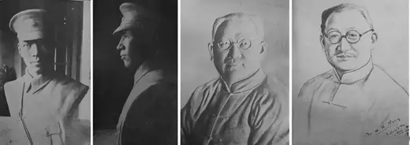

雕塑与素描 题名未核
访问原网页 ↗Visit original website ↗

馆藏图像与原文Archived images and documents
- 雕塑与素描 题名未核雕塑与素描 题名未核 I021

来源页摘录Source-page excerpt
滕白也:人物生平,主要作品,_中文百科全書
《畫壇遺珠：滕白也研究》是2008年3月1日東華大學出版社出版的書籍。內容簡介 《畫壇遺珠:滕白也研究》是關於…
相关记录Related records · S051
原始网址Original URL
https://www.newton.com.tw/wiki/%E6%BB%95%E7%99%BD%E4%B9%9F/4840323